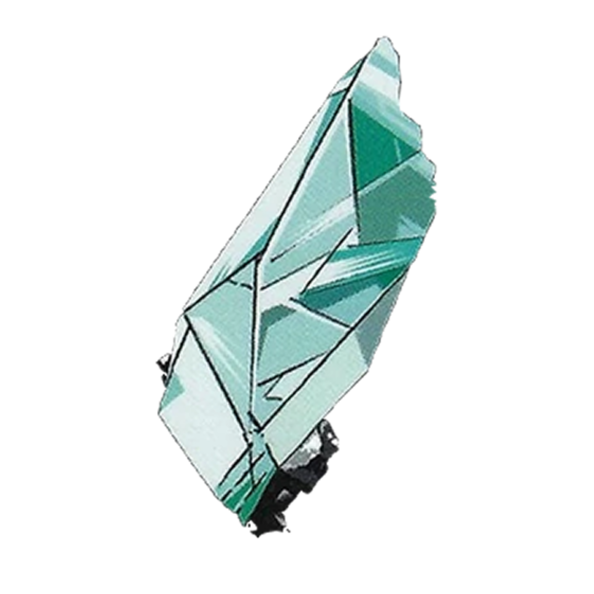
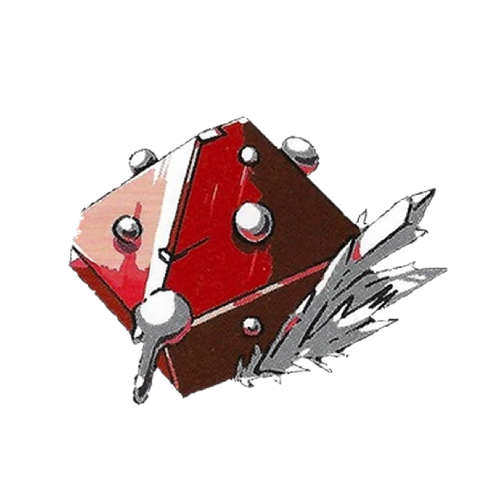

excerpts from the moon
|  |  |
|---|
In a world inhabited by crystalline lifeforms called The Lustrous, every unique gem must fight for their way of life against the threat of lunarians who would turn them into decorations. Phosphophyllite, the most fragile and brittle of gems, longs to join the battle. When Phos is instead assigned to complete a natural history of their world, it sounds like a dull and pointless task. But this new job brings Phos into contact with Cinnabar, a gem forced to live in isolation. Can Phos’ seemingly mundane assignment lead both Phos and Cinnabar to the fulfillment they desire?